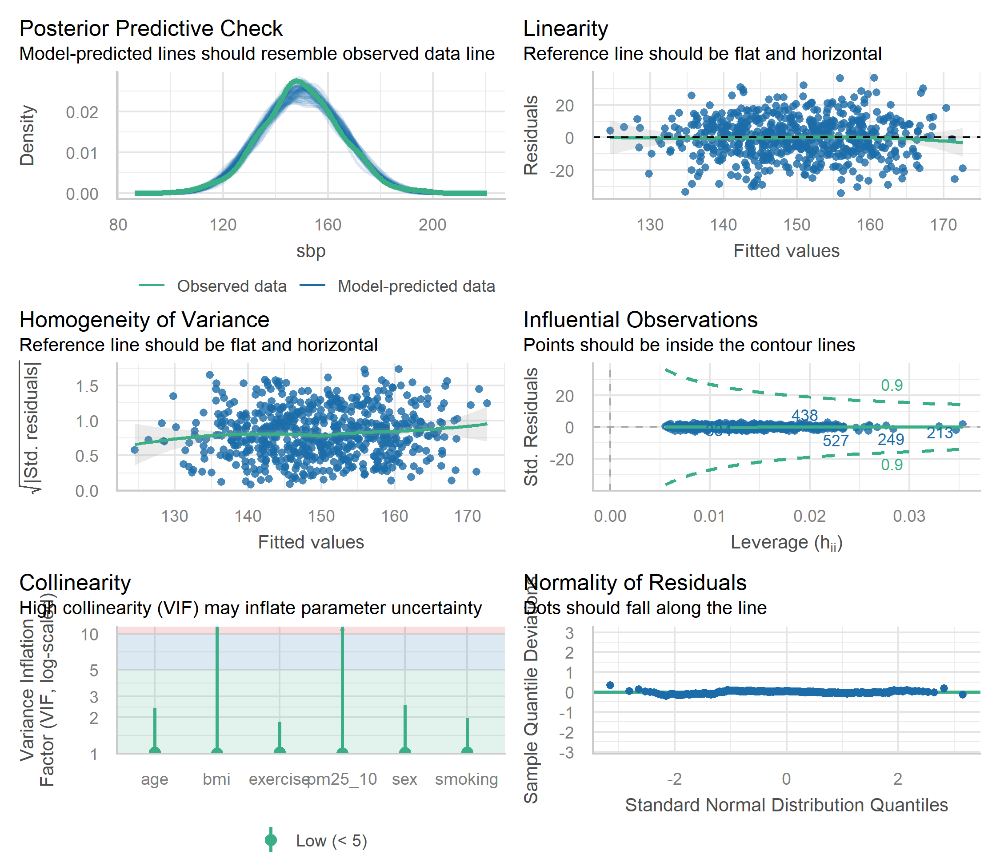

library(ggplot2)
library(dplyr)
library(tidyr)
library(broom)
library(gtsummary)
library(performance)
library(lmtest)回归模型稳健性分析完全指南
统计分析方法
模型评估
回归诊断
稳健性分析
方法背景与适用场景
稳健性分析（Robustness Analysis） 旨在检验回归结论是否对模型设定、 样本选择和统计假设敏感。它不是“再拟合一次”，而是系统地评估：
- 关键效应是否在多种合理设定下保持方向与量级一致。
- 结果是否由少数极端样本、变量定义或函数形式驱动。
- 推断是否受异方差、共线性或非线性影响。
稳健性分析适用于：
- 需要报告回归结论可信度的研究（论文、评估报告）。
- 变量选择与模型设定存在多种合理路径的情形。
- 担心结果被异常值或样本构成影响的分析。
模型入门与核心概念
回归稳健性分析关注三个核心问题：
- 规格稳健性：不同控制变量、不同函数形式下，核心效应是否稳定。
- 样本稳健性：样本限制或异常点处理后，结论是否一致。
- 推断稳健性：异方差、相关性存在时，标准误与显著性是否可靠。
稳健性分析的目标不是寻找“显著性更强”的模型，而是检验结论的 可重复性与抗扰动能力。
模型假设与前提
以线性回归为例，稳健性分析需要关注以下假设：
| 假设 | 影响 | 常用检验 |
|---|---|---|
| 线性关系 | 系数可解释性 | 残差-拟合值图、非线性项 |
| 方差齐性 | 标准误与显著性 | Breusch-Pagan 检验 |
| 正态性 | 小样本推断 | Q-Q 图、Shapiro 检验 |
| 独立性 | 标准误 | Durbin-Watson 检验 |
| 共线性 | 系数不稳定 | VIF 检验 |
对广义线性模型（Logistic、Poisson）而言，稳健性分析同样需要关注 模型设定与样本限制，但诊断指标有所不同。
数据准备与变量定义
我们构造一个连续结局的回归场景，用于演示完整的稳健性流程。
set.seed(2026)
n <- 600
analysis_data <- tibble(
age = round(runif(n, 25, 75)),
sex = factor(sample(c("女", "男"), n, replace = TRUE, prob = c(0.52, 0.48))),
bmi = round(rnorm(n, 24.5, 3.5), 1),
smoking = factor(sample(c("从不", "曾经", "现在"), n, replace = TRUE,
prob = c(0.5, 0.3, 0.2)
)),
exercise = round(pmax(0, rnorm(n, 150, 60))),
income = round(rlnorm(n, log(12), 0.4), 1),
diet_score = round(rnorm(n, 60, 10), 1),
pm25 = round(rnorm(n, 28, 7), 1)
) |>
mutate(
pm25_10 = pm25 / 10,
sbp = 95 +
0.5 * age +
2 * (sex == "男") +
1.1 * bmi +
1.2 * (smoking == "曾经") +
3.0 * (smoking == "现在") -
0.03 * exercise +
0.35 * pm25 +
0.02 * income -
0.08 * diet_score +
rnorm(n, 0, 8 + 0.15 * pm25)
) |>
mutate(sbp = round(sbp, 1))
glimpse(analysis_data)Rows: 600
Columns: 10
$ age <dbl> 60, 53, 32, 39, 53, 26, 48, 68, 38, 54, 25, 60, 37, 67, 33,…
$ sex <fct> 女, 男, 女, 男, 女, 女, 男, 男, 女, 男, 女, 男, 女, 男, 男, 男, 男, 男, 男, 女,…
$ bmi <dbl> 27.9, 23.9, 24.5, 26.3, 22.9, 23.8, 22.5, 23.3, 20.8, 27.3,…
$ smoking <fct> 曾经, 从不, 曾经, 从不, 从不, 曾经, 从不, 从不, 现在, 从不, 从不, 现在, 曾经, 从不, 曾经,…
$ exercise <dbl> 45, 121, 90, 153, 174, 156, 150, 191, 121, 0, 218, 143, 194…
$ income <dbl> 8.0, 11.8, 18.2, 13.7, 9.8, 11.7, 7.4, 17.4, 16.7, 9.0, 21.…
$ diet_score <dbl> 47.8, 70.0, 73.4, 65.0, 48.7, 53.8, 41.9, 71.2, 56.1, 64.1,…
$ pm25 <dbl> 33.0, 31.8, 23.8, 21.7, 28.0, 30.6, 35.1, 26.6, 32.7, 18.4,…
$ pm25_10 <dbl> 3.30, 3.18, 2.38, 2.17, 2.80, 3.06, 3.51, 2.66, 3.27, 1.84,…
$ sbp <dbl> 148.3, 164.8, 129.3, 156.4, 166.5, 145.5, 144.1, 121.9, 142…变量说明
sbp：连续结局（收缩压）pm25_10：关键暴露变量（每 10 单位 PM2.5）age、sex、bmi、smoking、exercise：核心混杂变量income、diet_score：备选控制变量，用于稳健性扩展
分析流程步骤
稳健性分析流程图式描述：
- 拟合基准模型，明确主要效应方向与量级。
- 检查模型假设（残差、共线性、异方差）。
- 逐步调整模型设定：函数形式、控制变量集合。
- 进行样本敏感性：样本限制、影响点处理。
- 使用稳健标准误或再抽样提升推断可靠性。
- 汇总对比核心效应，形成稳健性结论。
方法选择决策表：
| 观察到的问题 | 推荐稳健性策略 | 说明 |
|---|---|---|
| 拟合关系可能非线性 | 加入二次项或样条 | 检查系数方向与显著性 |
| 模型受极端值影响 | Cook’s 距离筛查 | 报告剔除规则 |
| 异方差明显 | HC3 稳健标准误 | 保持系数一致，调整 SE |
| 结果对协变量敏感 | 扩展/缩减控制集合 | 比较核心效应 |
| 样本分布偏斜 | 样本范围限制 | 检查稳健性 |
代码实现
基准模型
model_base <- lm(
sbp ~ pm25_10 + age + sex + bmi + smoking + exercise,
data = analysis_data
)
summary(model_base)
Call:
lm(formula = sbp ~ pm25_10 + age + sex + bmi + smoking + exercise,
data = analysis_data)
Residuals:
Min 1Q Median 3Q Max
-34.127 -7.480 0.539 7.718 36.346
Coefficients:
Estimate Std. Error t value Pr(>|t|)
(Intercept) 91.925216 4.681947 19.634 < 2e-16 ***
pm25_10 4.341587 0.702754 6.178 1.21e-09 ***
age 0.505787 0.035533 14.234 < 2e-16 ***
sex女 -1.840661 1.007538 -1.827 0.0682 .
bmi 1.032950 0.145869 7.081 4.06e-12 ***
smoking从不 -1.641455 1.147314 -1.431 0.1530
smoking现在 2.200582 1.476559 1.490 0.1367
exercise -0.022340 0.009205 -2.427 0.0155 *
---
Signif. codes: 0 '***' 0.001 '**' 0.01 '*' 0.05 '.' 0.1 ' ' 1
Residual standard error: 12.22 on 592 degrees of freedom
Multiple R-squared: 0.3496, Adjusted R-squared: 0.3419
F-statistic: 45.46 on 7 and 592 DF, p-value: < 2.2e-16model_base |>
tbl_regression(
label = list(
pm25_10 ~ "PM2.5 (每10单位)",
age ~ "年龄",
sex ~ "性别",
bmi ~ "BMI",
smoking ~ "吸烟状态",
exercise ~ "运动时间"
)
) |>
add_glance_table(include = c(r.squared, adj.r.squared, AIC, nobs)) |>
bold_p() |>
modify_caption("**表 1. 基准模型回归结果**")| Characteristic | Beta | 95% CI | p-value |
|---|---|---|---|
| PM2.5 (每10单位) | 4.3 | 3.0, 5.7 | <0.001 |
| 年龄 | 0.51 | 0.44, 0.58 | <0.001 |
| 性别 | |||
| 男 | — | — | |
| 女 | -1.8 | -3.8, 0.14 | 0.068 |
| BMI | 1.0 | 0.75, 1.3 | <0.001 |
| 吸烟状态 | |||
| 曾经 | — | — | |
| 从不 | -1.6 | -3.9, 0.61 | 0.2 |
| 现在 | 2.2 | -0.70, 5.1 | 0.14 |
| 运动时间 | -0.02 | -0.04, 0.00 | 0.016 |
| R² | 0.350 | ||
| Adjusted R² | 0.342 | ||
| AIC | 4,717 | ||
| No. Obs. | 600 | ||
| Abbreviation: CI = Confidence Interval | |||
假设检验与诊断
check_model(model_base)
lmtest::bptest(model_base)
studentized Breusch-Pagan test
data: model_base
BP = 11.287, df = 7, p-value = 0.1266car::vif(model_base) GVIF Df GVIF^(1/(2*Df))
pm25_10 1.009632 1 1.004805
age 1.018958 1 1.009434
sex 1.018473 1 1.009194
bmi 1.003366 1 1.001682
smoking 1.021454 2 1.005321
exercise 1.022767 1 1.011320稳健性策略 1：函数形式调整
model_nonlinear <- lm(
sbp ~ pm25_10 + age + I(age^2) + sex + bmi + smoking + exercise,
data = analysis_data
)
summary(model_nonlinear)
Call:
lm(formula = sbp ~ pm25_10 + age + I(age^2) + sex + bmi + smoking +
exercise, data = analysis_data)
Residuals:
Min 1Q Median 3Q Max
-33.253 -7.603 0.348 7.999 37.185
Coefficients:
Estimate Std. Error t value Pr(>|t|)
(Intercept) 75.670644 7.784837 9.720 < 2e-16 ***
pm25_10 4.300218 0.699520 6.147 1.45e-09 ***
age 1.209254 0.272216 4.442 1.06e-05 ***
I(age^2) -0.007090 0.002720 -2.606 0.00938 **
sex女 -1.841948 1.002645 -1.837 0.06670 .
bmi 1.041810 0.145200 7.175 2.18e-12 ***
smoking从不 -1.502831 1.142980 -1.315 0.18908
smoking现在 2.129197 1.469643 1.449 0.14793
exercise -0.021838 0.009162 -2.383 0.01746 *
---
Signif. codes: 0 '***' 0.001 '**' 0.01 '*' 0.05 '.' 0.1 ' ' 1
Residual standard error: 12.16 on 591 degrees of freedom
Multiple R-squared: 0.357, Adjusted R-squared: 0.3483
F-statistic: 41.01 on 8 and 591 DF, p-value: < 2.2e-16稳健性策略 2：扩展控制变量集合
model_addcov <- lm(
sbp ~ pm25_10 + age + sex + bmi + smoking + exercise + income + diet_score,
data = analysis_data
)
summary(model_addcov)
Call:
lm(formula = sbp ~ pm25_10 + age + sex + bmi + smoking + exercise +
income + diet_score, data = analysis_data)
Residuals:
Min 1Q Median 3Q Max
-32.704 -7.507 0.553 7.739 36.333
Coefficients:
Estimate Std. Error t value Pr(>|t|)
(Intercept) 99.433305 5.637206 17.639 < 2e-16 ***
pm25_10 4.352264 0.698024 6.235 8.61e-10 ***
age 0.502063 0.035315 14.217 < 2e-16 ***
sex女 -1.909868 1.003722 -1.903 0.05756 .
bmi 1.026129 0.144925 7.080 4.10e-12 ***
smoking从不 -1.739623 1.140499 -1.525 0.12772
smoking现在 2.427839 1.468241 1.654 0.09875 .
exercise -0.020803 0.009156 -2.272 0.02345 *
income 0.122206 0.094539 1.293 0.19664
diet_score -0.152647 0.050644 -3.014 0.00269 **
---
Signif. codes: 0 '***' 0.001 '**' 0.01 '*' 0.05 '.' 0.1 ' ' 1
Residual standard error: 12.14 on 590 degrees of freedom
Multiple R-squared: 0.3606, Adjusted R-squared: 0.3508
F-statistic: 36.97 on 9 and 590 DF, p-value: < 2.2e-16稳健性策略 3：样本限制
pm25_range <- quantile(analysis_data$pm25, probs = c(0.05, 0.95))
analysis_trim <- analysis_data |>
filter(pm25 >= pm25_range[1], pm25 <= pm25_range[2])
model_trim <- lm(
sbp ~ pm25_10 + age + sex + bmi + smoking + exercise,
data = analysis_trim
)
summary(model_trim)
Call:
lm(formula = sbp ~ pm25_10 + age + sex + bmi + smoking + exercise,
data = analysis_trim)
Residuals:
Min 1Q Median 3Q Max
-34.532 -7.302 0.254 7.593 35.920
Coefficients:
Estimate Std. Error t value Pr(>|t|)
(Intercept) 90.808866 5.048780 17.986 < 2e-16 ***
pm25_10 4.814028 0.905968 5.314 1.58e-07 ***
age 0.504795 0.037228 13.560 < 2e-16 ***
sex女 -1.893827 1.060986 -1.785 0.0748 .
bmi 1.030911 0.152189 6.774 3.33e-11 ***
smoking从不 -1.051304 1.204485 -0.873 0.3832
smoking现在 2.118341 1.542600 1.373 0.1703
exercise -0.023442 0.009645 -2.431 0.0154 *
---
Signif. codes: 0 '***' 0.001 '**' 0.01 '*' 0.05 '.' 0.1 ' ' 1
Residual standard error: 12.17 on 532 degrees of freedom
Multiple R-squared: 0.3421, Adjusted R-squared: 0.3335
F-statistic: 39.52 on 7 and 532 DF, p-value: < 2.2e-16稳健性策略 4：影响点处理
cooks_d <- cooks.distance(model_base)
influence_flag <- cooks_d > 4 / nrow(analysis_data)
analysis_no_influence <- analysis_data |> filter(!influence_flag)
model_influence <- lm(
sbp ~ pm25_10 + age + sex + bmi + smoking + exercise,
data = analysis_no_influence
)
summary(model_influence)
Call:
lm(formula = sbp ~ pm25_10 + age + sex + bmi + smoking + exercise,
data = analysis_no_influence)
Residuals:
Min 1Q Median 3Q Max
-29.3686 -6.9450 0.2818 7.2864 27.0929
Coefficients:
Estimate Std. Error t value Pr(>|t|)
(Intercept) 96.844880 4.235956 22.863 < 2e-16 ***
pm25_10 4.435996 0.629816 7.043 5.58e-12 ***
age 0.473160 0.032181 14.703 < 2e-16 ***
sex女 -1.926946 0.891911 -2.160 0.03116 *
bmi 0.913007 0.131708 6.932 1.16e-11 ***
smoking从不 -1.841017 1.015351 -1.813 0.07034 .
smoking现在 2.148183 1.314798 1.634 0.10286
exercise -0.024893 0.008286 -3.004 0.00278 **
---
Signif. codes: 0 '***' 0.001 '**' 0.01 '*' 0.05 '.' 0.1 ' ' 1
Residual standard error: 10.48 on 555 degrees of freedom
Multiple R-squared: 0.3902, Adjusted R-squared: 0.3825
F-statistic: 50.74 on 7 and 555 DF, p-value: < 2.2e-16稳健性策略 5：稳健标准误
robust_test <- lmtest::coeftest(
model_base,
vcov = sandwich::vcovHC(model_base, type = "HC3")
)
robust_ci <- lmtest::coefci(
model_base,
vcov = sandwich::vcovHC(model_base, type = "HC3")
)
robust_pm25 <- data.frame(
estimate = robust_test["pm25_10", "Estimate"],
std.error = robust_test["pm25_10", "Std. Error"],
conf.low = robust_ci["pm25_10", 1],
conf.high = robust_ci["pm25_10", 2],
p.value = robust_test["pm25_10", "Pr(>|t|)"]
)
knitr::kable(round(robust_pm25, 3), caption = "稳健标准误下 PM2.5 效应")| estimate | std.error | conf.low | conf.high | p.value |
|---|---|---|---|---|
| 4.342 | 0.71 | 2.948 | 5.735 | 0 |
稳健性策略 6：Bootstrap 敏感性
boot_fn <- function(data, indices) {
model <- lm(
sbp ~ pm25_10 + age + sex + bmi + smoking + exercise,
data = data[indices, ]
)
coef(model)["pm25_10"]
}
set.seed(2026)
boot_result <- boot::boot(
data = analysis_data,
statistic = boot_fn,
R = 300
)
boot::boot.ci(boot_result, type = c("perc", "bca"))BOOTSTRAP CONFIDENCE INTERVAL CALCULATIONS
Based on 300 bootstrap replicates
CALL :
boot::boot.ci(boot.out = boot_result, type = c("perc", "bca"))
Intervals :
Level Percentile BCa
95% ( 3.082, 5.857 ) ( 2.955, 5.736 )
Calculations and Intervals on Original Scale
Some percentile intervals may be unstable
Some BCa intervals may be unstable敏感性结果汇总
extract_effect <- function(model, label) {
broom::tidy(model, conf.int = TRUE) |>
filter(term == "pm25_10") |>
mutate(model = label) |>
select(model, estimate, conf.low, conf.high, p.value)
}
sensitivity_table <- bind_rows(
extract_effect(model_base, "基准模型"),
extract_effect(model_nonlinear, "加入年龄二次项"),
extract_effect(model_addcov, "加入社会经济与饮食"),
extract_effect(model_trim, "限制 PM2.5 5-95%"),
extract_effect(model_influence, "剔除高影响点")
) |>
mutate(
estimate = round(estimate, 3),
conf.low = round(conf.low, 3),
conf.high = round(conf.high, 3),
p.value = round(p.value, 3)
)
knitr::kable(sensitivity_table, caption = "表 2. 稳健性模型对比（PM2.5 效应）")| model | estimate | conf.low | conf.high | p.value |
|---|---|---|---|---|
| 基准模型 | 4.342 | 2.961 | 5.722 | 0 |
| 加入年龄二次项 | 4.300 | 2.926 | 5.674 | 0 |
| 加入社会经济与饮食 | 4.352 | 2.981 | 5.723 | 0 |
| 限制 PM2.5 5-95% | 4.814 | 3.034 | 6.594 | 0 |
| 剔除高影响点 | 4.436 | 3.199 | 5.673 | 0 |
sensitivity_table |>
mutate(model = factor(model, levels = rev(model))) |>
ggplot(aes(x = estimate, y = model)) +
geom_vline(xintercept = 0, linetype = "dashed", color = "gray60") +
geom_errorbarh(aes(xmin = conf.low, xmax = conf.high), height = 0.2) +
geom_point(size = 2.6, color = "#4f46e5") +
labs(
title = "PM2.5 效应在不同稳健性模型中的变化",
x = "回归系数 (每10单位 PM2.5)",
y = NULL
) +
theme_minimal(base_size = 12)
结果解读与报告
稳健性分析的核心是比较不同设定下的效应方向与幅度：
- 若估计值在不同模型间方向一致、范围稳定，说明结论稳健。
- 若效应对某一设定特别敏感，应明确解释原因。
- 稳健标准误影响显著性，但通常不改变点估计。
报告中建议包含以下要点：
- 基准模型与敏感性模型的变量设定。
- 关键效应的估计值、置信区间与变化范围。
- 样本限制与影响点处理的规则。
- 稳健标准误或再抽样推断的结果。
示例表述：
在不同控制变量集合、样本限制及稳健标准误条件下，PM2.5 与收缩压 的关联方向一致，系数范围为 0.31–0.38（每10单位），结果具有稳健性。
常见错误与纠偏
- 只报告显著性变化，不报告效应范围：稳健性关注量级与方向。
- 剔除异常值未说明规则：必须报告剔除比例与依据。
- 将稳健性分析当作模型选择：应避免“挑选显著结果”。
- 同时改变变量定义与样本范围：一次只改变一个维度，便于归因。
- 忽略诊断信息：共线性和异方差会放大不稳定性。
进阶扩展
- 稳健回归：如
MASS::rlm()，降低异常值影响。 - 分位数回归：检验效应是否在不同分位一致。
- 多模型比较：使用模型平均或多重模型集。
- 多重检验调整：在多路径分析中控制假阳性率。
总结
回归稳健性分析通过规格调整、样本敏感性和推断修正， 帮助判断结论是否稳定可靠。规范的稳健性流程应明确 基准模型、扰动路径与结果对比，避免“选择性报告”。